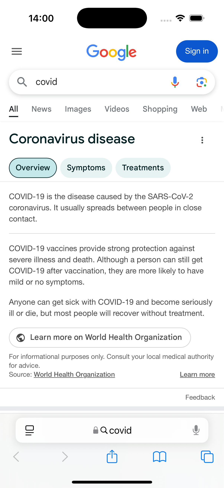
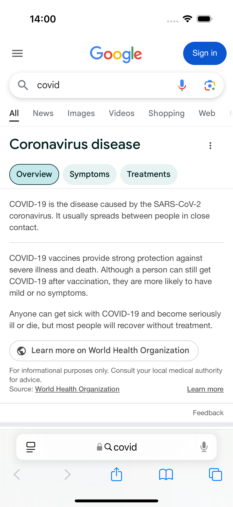
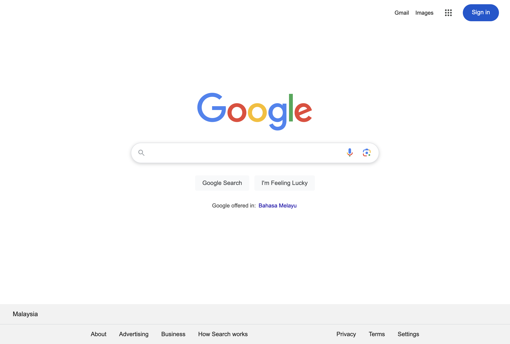
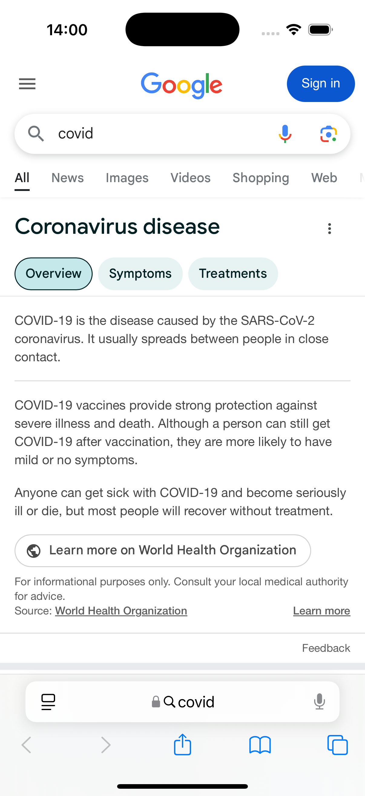
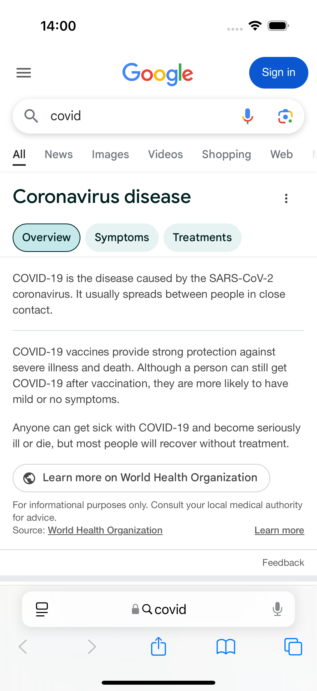
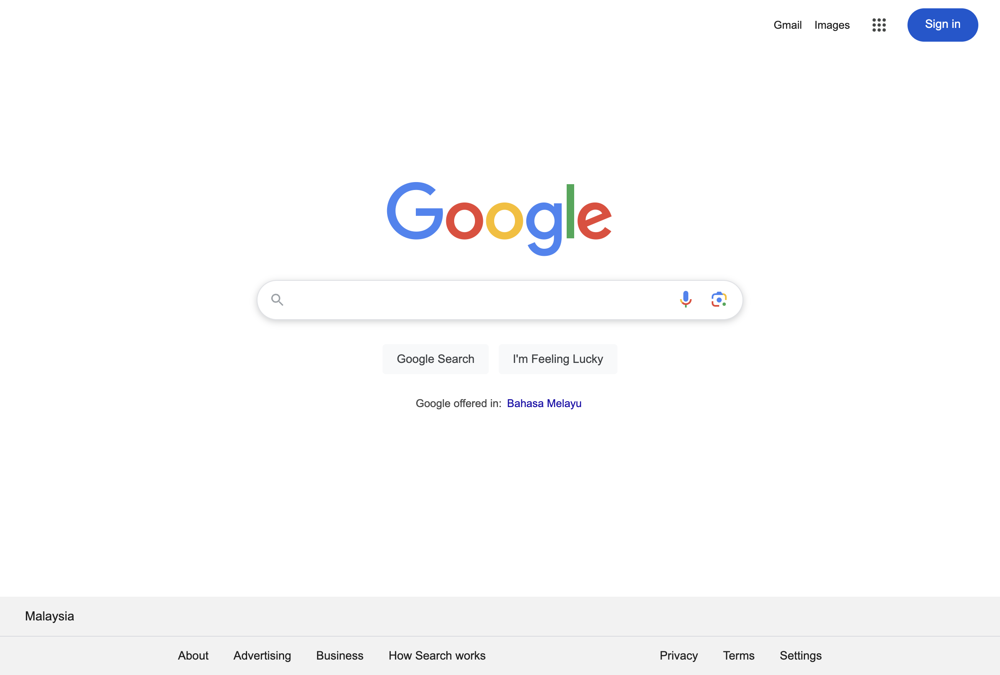

Started
Dec 20, 2024 13:59:48
Ended
Dec 20, 2024 14:00:27
Features Passed
1
Features Failed
1
Features
Scenarios
Steps
Timeline
Tags
| Name | Passed | Failed | Skipped | Others | Passed % |
|---|---|---|---|---|---|
| @Test1 | 3 | 2 | 0 | 0 | 60% |
System/Environment
| Name | Value |
|---|---|
| TestEngineer | Amirul Hakim |
| Project | Cucumber Demo Framework |
| OS | Mac OS |
-
Using IOS 1
1:59:48 pm / 00:00:38:753 Pass
Using IOS 1
12.20.2024 1:59:48 pm 12.20.2024 2:00:27 pm 00:00:38:753 · #test-id=1PassPrint Device Driver 2Given I launch the Mobile Simulator "iOS Device 1"workDirectory.stepDefinitions.Hooks.takeScreenshotAfterStep(io.cucumber.java.Scenario)Screenshot Then print driver instance ID2261e364-6d62-4aa0-90ed-4363a0c16af8workDirectory.stepDefinitions.Hooks.takeScreenshotAfterStep(io.cucumber.java.Scenario)Screenshot
Then print driver instance ID2261e364-6d62-4aa0-90ed-4363a0c16af8workDirectory.stepDefinitions.Hooks.takeScreenshotAfterStep(io.cucumber.java.Scenario)Screenshot PassPrint Device Driver 1Given I launch the Mobile Simulator "iOS Device 1"workDirectory.stepDefinitions.Hooks.takeScreenshotAfterStep(io.cucumber.java.Scenario)Screenshot
PassPrint Device Driver 1Given I launch the Mobile Simulator "iOS Device 1"workDirectory.stepDefinitions.Hooks.takeScreenshotAfterStep(io.cucumber.java.Scenario)Screenshot Then print driver instance ID154ca88b-1852-4d21-8433-767e5a7d0f54workDirectory.stepDefinitions.Hooks.takeScreenshotAfterStep(io.cucumber.java.Scenario)ScreenshotPassUser To Test Search Bar FunctionGiven I launch the Mobile Simulator "iOS Device 1"workDirectory.stepDefinitions.Hooks.takeScreenshotAfterStep(io.cucumber.java.Scenario)ScreenshotGiven I launch the browser and navigate to Google page with "chrome"workDirectory.stepDefinitions.Hooks.takeScreenshotAfterStep(io.cucumber.java.Scenario)Screenshot
Then print driver instance ID154ca88b-1852-4d21-8433-767e5a7d0f54workDirectory.stepDefinitions.Hooks.takeScreenshotAfterStep(io.cucumber.java.Scenario)ScreenshotPassUser To Test Search Bar FunctionGiven I launch the Mobile Simulator "iOS Device 1"workDirectory.stepDefinitions.Hooks.takeScreenshotAfterStep(io.cucumber.java.Scenario)ScreenshotGiven I launch the browser and navigate to Google page with "chrome"workDirectory.stepDefinitions.Hooks.takeScreenshotAfterStep(io.cucumber.java.Scenario)Screenshot -
Using Android 1
1:59:48 pm / 00:00:13:607 Fail
Using Android 1
12.20.2024 1:59:48 pm 12.20.2024 2:00:02 pm 00:00:13:607 · #test-id=3FailUser To Test Search Bar FunctionGiven I launch the Mobile Simulator "Android Device 1"workDirectory.stepDefinitions.Hooks.takeScreenshotAfterStep(io.cucumber.java.Scenario)When print driver instance IDStep skippedFailUser To Test Search Bar FunctionGiven I launch the Mobile Simulator "Android Device 1"workDirectory.stepDefinitions.Hooks.takeScreenshotAfterStep(io.cucumber.java.Scenario)When print driver instance IDStep skipped
-
@Test1
5 tests
@Test1
3 passed 2 failedStatus Timestamp TestName Pass 13:59:48 pm Print Device Driver 2 Using IOS 1.Print Device Driver 2Fail 13:59:48 pm User To Test Search Bar Function Using Android 1.User To Test Search Bar FunctionPass 13:59:48 pm Print Device Driver 1 Using IOS 1.Print Device Driver 1Fail 13:59:48 pm User To Test Search Bar Function Using Android 1.User To Test Search Bar FunctionPass 13:59:48 pm User To Test Search Bar Function Using IOS 1.User To Test Search Bar Function
-
org.openqa.selenium.WebDriverException
2 tests
org.openqa.selenium.WebDriverException
2 failedStatus Timestamp TestName Fail 14:00:01 pm workDirectory.stepDefinitions.Hooks.takeScreenshotAfterStep(io.cucumber.java.Scenario) Using Android 1.User To Test Search Bar Function.workDirectory.stepDefinitions.Hooks.takeScreenshotAfterStep(io.cucumber.java.Scenario)Fail 14:00:02 pm workDirectory.stepDefinitions.Hooks.takeScreenshotAfterStep(io.cucumber.java.Scenario) Using Android 1.User To Test Search Bar Function.workDirectory.stepDefinitions.Hooks.takeScreenshotAfterStep(io.cucumber.java.Scenario)